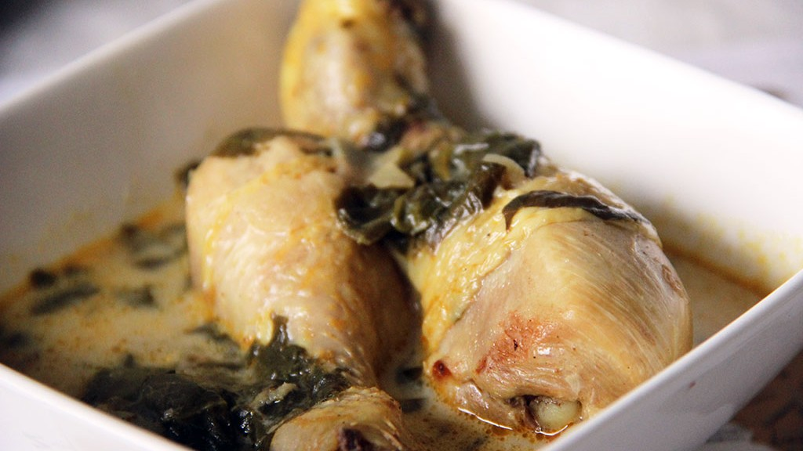
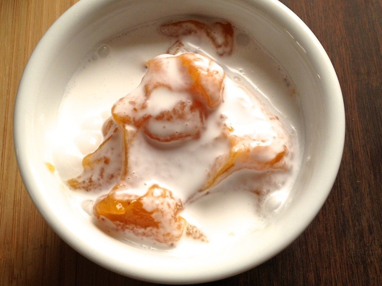

50 cl de lait de coco
400g de thon rouge ou autre poisson blanc (à chair ferme)
4 citrons verts
1 concombre
1 tomate
1 carotte
1 oignon rouge
Un peu de gingembre frais
Un peu de coriandre fraîche
Le poisson cru à la tahitienne (i'a ota en langue tahitienne) est une spécialité gastronomique traditionnelle de Tahiti, qui peut être comparée au ceviche, qu'on trouve sur la côte pacifique de l'Amérique latine.
Ce plat est généralement préparé à partir de thon très frais, mais d'autres poissons de Polynésie, comme le mahi mahi (dorade coryphène), la bonite ou le barracuda, se prêtent également à cette préparation.
Le filet de poisson est découpé en dés et assaisonné de sel et de citron. Le poisson est ensuite réservé pendant un temps variable, par exemple une vingtaine de minutes, au réfrigérateur où il est « cuit » par le jus de citron. Du lait de coco est ajouté avant de servir.
Un plat : Le poulet fafa

Recette pour 4 personnes
4 cuisses de poulet (500gr environ sans les os)
800 gr de Fafa (ou feuilles d’épinard)
40 cl de lait de coco
Sel, poivre
Marinade : 1 oignon émincé ; 20 gr de gingembre haché finement ; 2 c. à s. d’huile ; 2 c. à s. de sauce soja
Dans une cocotte, faites revenir les oignons et dorer les morceaux de poulet.
Ajoutez ensuite les épinards lavés et égouttés (si vous utilisez du surgelé, pas besoin de décongélation préalable), l'ail écrasé, le cube de bouillon, la muscade et un peu de gingembre.
Mouillez avec un peu d'eau, salez, poivrez, puis laissez cuire à feu doux le temps que le poulet soit cuit (de 30 minutes à 1 une heure en fonction de la taille des morceaux de poulet).
Ajoutez le lait de coco, puis arrêtez la cuisson avant ébullition. Servez avec du riz.
Un dessert : Le poe banane

Recette pour 2 personnes
Banane
Lait de coco
Amidon (farine de tapioca)
Sucre blanc
1 gousse de vanille
Cette recette d’origine Paumotu (de l’archipel des Tuamotu) peut être aussi réalisée avec de la papaye, de la goyave ou du potiron par exemple.
On peut servir le po’e en dessert, mais en Polynésie on le sert également en accompagnement d’un poisson grillé par exemple.